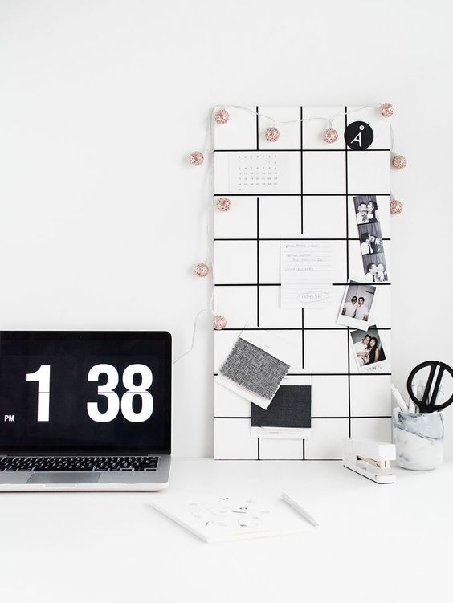

minimalist
soul
LIFESTYLE

Minimalism is a way to put a stop to the gluttony of the world around us. It is the opposite of every advertisement we see plastered on the radio and TV. We live in a society that prides itself on the accumulation of stuff; we eat up consumerism, material possessions, clutter, debt, distractions and noise. Living a minimalist lifestyle is reducing. There are a few obvious benefits such as less cleaning and stress, a more organized household and more money to be found, but there are also a few deep, life-changing benefits.
More >>
Steps to living a minimalist lifestyle
- Visualize the benefits of minimalism
- Less focus on material items for personal fulfillment
- Reduced stress about how much money you earn
- Less clutter, and more free space
- Limit your social commitments
- friendships with people who don't have your best interests at heart
- on-again, off-again relationships that cause you sadness
- Declutter all aspects of your life
- Closely observe where you are repeatedly spending your time and money
- Ask yourself, "Is there a way I can sidestep or eliminate these expenses/commitments altogether?"
- If it is not essential to your life then you do not need it.
HOME DECOR
All the stuff we surround ourselves with is merely a distraction, we are filling a void. I enjoy stuff, but I also recognize that I do not need it. A minimalist room would only contain a few essential pieces of furniture. Instead of having a lot of stuff in your home, a minimalist would choose just a few really good things he loves and uses often. DECLUTTER.
ORGANISATION & DECLUTTERING
The idea of living a simplified, uncluttered life with less stuff sounds attractive to many. They have considered the benefits of owning fewer possessions: less to clean, less debt, less to organize, less stress, more money and energy for their greatest passions. We live in a society that prides itself on the accumulation of stuff; we eat up consumerism, material possessions, clutter, debt, distractions and noise.
GRAPHIC DESIGN
Minimalist design can be identified by a framework that is simple in nature. Only necessary elements for functionality are included in the design.
Elements such as color and typography are also used with an emphasis on simplicity with extremely pared down palettes that may include only one hue or typeface. Details and space are design factors that really rule the aesthetic.
MINIMALIST ART
Minimalism emerged in New York in the early 1960s among artists who were self-consciously renouncing recent art they thought had become stale and academic. A wave of new influences and rediscovered styles led younger artists to question conventional boundaries between various media. The new art favored the cool over the "dramatic": their sculptures were frequently fabricated from industrial materials and emphasized anonymity over the expressive excess of Abstract Expressionism. Painters and sculptors avoided overt symbolism and emotional content, but instead called attention to the materiality of the works. By the end of the 1970s, Minimalism had triumphed in America and Europe through a combination of forces including museum curators, art dealers, and publications, plus new systems of private and government patronage. And members of a new movement, Post-Minimalism, were already challenging its authority and were thus a testament to how important Minimalism itself became.
More >>